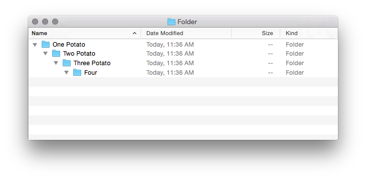

Mimic
An API Compatible Mock Service For OpenStack
Lekha
software developer in test
(at) Rackspace
Glyph
software developer
(at) Rackspace
What?
Sneak Peek
Why?
Auto Scale
Dependencies
(of Auto Scale)
Rackspace Identity
Rackspace Cloud Servers
Rackspace Cloud Load Balancers
Rackspace Identity ≈ OpenStack Identity v2
Rackspace Cloud Servers ≈ OpenStack Compute
Rackspace Cloud Load Balancers = Custom API
Testing
(for Auto Scale)
Types of Tests
(for Auto Scale)
Functional
(API contracts)
Types of Tests
System Integration
Auto Scale
|
→
|
Identity
|
|
|
→
|
Compute
|
|
|
→
|
Load Balancers
|
Types of Tests
System Integration
(Example 1)
Types of Tests
System Integration
(Example 2)
Testing Problems
(with Auto Scale)
More Problems
(with Auto Scale)
We've Had Enough!
(on Auto Scale)
There And Back Again
Specific → General
General → Specific
General →
Testing For Failure
Real Services Fail
(Unpredictably)
Succeeding
At Success
Means Failing
At Failure
Mimic Succeeds
At Failure!
😈 ☁
(Production)
😇 ☁
(Staging)
import unittest
test_stuff ... [OK]
try:
result = service_request()
except:
return error
else:
return ok(result)
try:
result = service_request()
except:
return error
else:
return ok(result)
if not os.chdir(ca_folder(project_id)):
raise exception.ProjectNotFound(
project_id=project_id)
if not os.chdir(ca_folder(project_id)):
raise exception.ProjectNotFound(
project_id=project_id)
@mock.patch.object(os, 'chdir', return_value=True)
def test_revoke_cert_process_execution_error(self):
"..."
@mock.patch.object(os, 'chdir', return_value=False)
def test_revoke_cert_project_not_found_chdir_fails(self):
"..."


→Specific
Mimic
Mimic
Version 0.0
Pretending
...
Pretending
to authenticate
Pretending
to Boot Servers
Pretending
is faster than working
in-memory data structures
minimal software dependencies
almost entirely pure Python
service dependencies
self-contained
Demo!
Using Mimic
(on Auto Scale)
The Results!
(Functional tests using Mimic)
Functional Tests:
15 minutes
against a real system
vs.
30 seconds
against Mimic
The Results!
(System Integration tests using Mimic)
System Integration Tests:
3 hours or more
against a real system
vs.
3 minutes
against Mimic
✈
What about
error injection?
Mimic does
simulate errors
Error injection using metadata
Retry On Errors
Mimic 0.0 was...
Too Limited
Mimic 0.0 was...
Single Region
Beyond Auto Scale:
Refactoring Mimic
YAGNI
E(ITO)YAGNI
Plugins!
Identity
Is the Entry Point
(Not A Plugin)
IAPIMock
Plugin Interface
class IAPIMock():
def catalog_entries(...)
def resource_for_region(...)
(that's it!)
def catalog_entries(self,
tenant_id):
def resource_for_region(
self, region, uri_prefix,
session_store
):
# mimic/plugins/your_plugin.py
from your_api import SomeAPIMock
the_mock_plugin = SomeAPIMock()
Error Conditions Repository
Discovering Errors
Against Real Services
Record Those Errors
Within Mimic
Discover More Errors
Against Real Services
Record Those Errors
For The Next Project
Share A Repository
For Future Projects
Mimic Is A Repository
Control
Now & Later
Now
now()
/mimic/v1.1/tick
{
"amount": 100.0
}
{
"advanced": 1.0,
"now": "1970-01-01T00:00:02.000000Z"
}
{
"server": {
"status": "BUILD",
"updated": "1970-01-01T00:00:00.000000Z",
"OS-EXT-STS:task_state": null,
"user_id": "170454",
"addresses": {
"public": [
{
"version": 4,
"addr": "198.101.241.239"
{
"server": {
"status": "ACTIVE",
"updated": "1970-01-01T00:00:00.000000Z",
"OS-EXT-STS:task_state": null,
"user_id": "170454",
"addresses": {
"public": [
{
"version": 4,
"addr": "198.101.241.239"
Later
Error Injection
Even Later...
Call to Action
It's Easy!